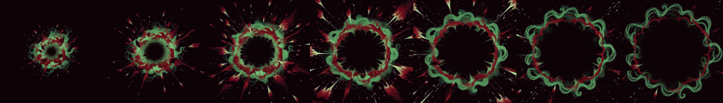
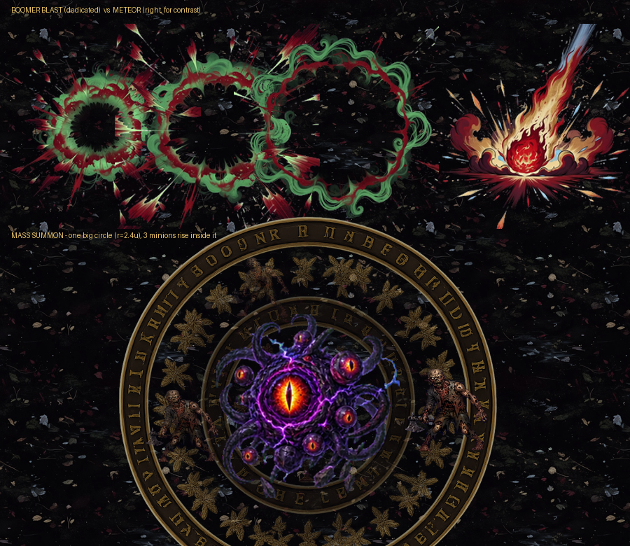

自爆專屬爆炸
等你確認
兩項都照你的方向重做了，還沒進遊戲。衝刺殘影已經用程式做好（沒有新素材，照你說的不用等確認）。


每 0.045 秒把魔王「當下的貼圖」複製一份留在原地，逐份淡出。用複製當下貼圖而不是固定素材——十隻魔王長相全不一樣，而且衝刺途中走路幀還在換，固定素材會跟本體對不上。
擴張中的衝擊環，中間本來應該透得出地面，去背又把圍起來的暗區留成不透明。這次比較麻煩——中心不是純黑而是有顏色的暗煙（RGB 23/41/27），亮度門檻切不掉，改用會跟著環一起擴大的徑向遮罩才開得乾淨。
這一輪：自爆影片 $0.32 ＋ 大法陣生圖 $0.2 ≈ $0.52；累計約 $7.4。沒有遇到 Grok 額度不足。